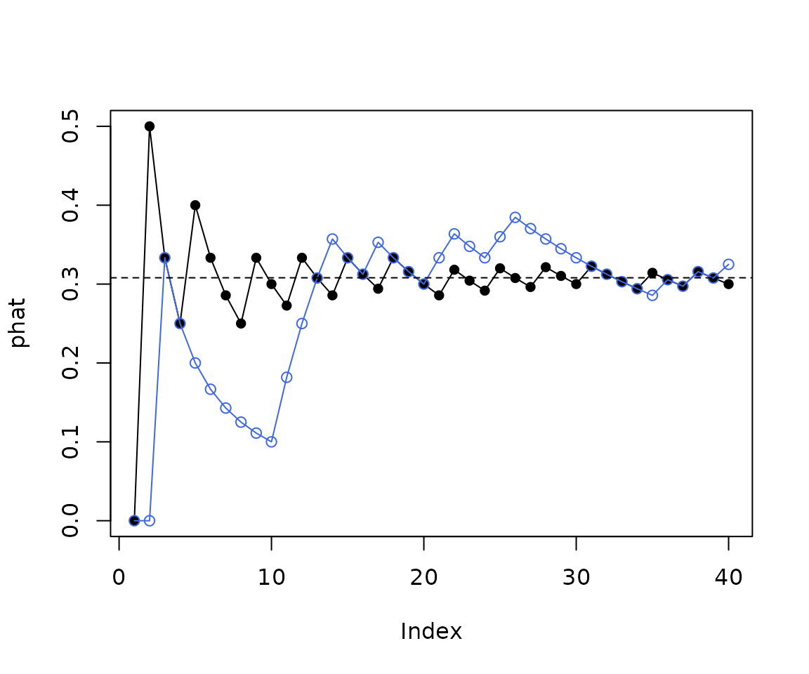

Browser Problem
Imagine we’re the developers of a browser called Ours, and we want to prove that it’s better than other any other browser, based on a set of features.
browsers <- c("Ours", "Chrome", "Firefox", "Opera", "Safari")
features <- c("Speed", "Ease of use", "Customizability",
"Privacy", "Extensions", "Ad-blocker")For each feature \(i\), each browser \(b\) will have a rating \(R_{ib}\). (These are made up)
ratings
#> browsers
#> features Ours Chrome Firefox Opera Safari
#> Speed 9 7 7 1 10
#> Ease of use 2 7 10 5 5
#> Customizability 6 2 9 5 9
#> Privacy 1 7 2 10 6
#> Extensions 9 7 3 4 1
#> Ad-blocker 5 5 7 3 3The question is how important is each feature? Let’s give each feature \(i\) an optimal weight \(w_i\). Then, we can calculate a \(\text{Score}_b(w)\) for each browser \(b\).
\[ \text{Score }_b = \sum_{i\in\text{Features}}{w_i R_{ib}} \qquad \forall b\in\text{Browsers} \]
Let’s try giving all the features the same weight. \(w_i=1 \quad \forall i \in \text{Features}\). We get these scores:
scores <- colSums(ratings)
sort(scores, decreasing = TRUE)
#> Firefox Chrome Safari Ours Opera
#> 38 35 34 32 28But this is nonsense! This would mean Ours is one of the worst browsers!
Let’s fix this. We’ll bias the weights \(w\) in favor of Ours. We can do this by maximizing the difference in scores between Ours (which will have the highest score) and the second best score.
\[ \max_w \{\ \text{Score}_\text{ Ours}(w) - \text{Second Best Score }(w) \ \} \]
We’ll make sure each feature matters by having \(1 \le w_i \le 5\), and make them integers for simplicity.
browser_problem <- lp_problem() |>
lp_variable(weight[features], lower = 1, upper = 5, integer = TRUE) |>
lp_variable(score[browsers]) |>
lp_variable(second_best_score) |>
lp_maximize(score["Ours"] - second_best_score) |>
lp_subject_to(
for (b in browsers) {
score[b] == sum_over(ratings[i, b] * weight[i], i=features)
},
for (b in browsers) if (b != "Ours") {
second_best_score >= score[b]
}
) |>
lp_solve(solver = "highs")
optimal_weights <- browser_problem$variables$weightTake a look at the new weights. Now speed and extensions are the most important features, and customizability is also relevant.
#> feature weight
#> 1 Speed 5
#> 2 Ease of use 1
#> 3 Customizability 3
#> 4 Privacy 1
#> 5 Extensions 5
#> 6 Ad-blocker 1With these new weights, we can calculate the new scores for each browser. These prove that Ours is the best browser!
Not-So-Random Number Generator (NSRNG)
We want to generate a sequence of values according to a probability distribution.
\[ y_t \sim \text{Bernoulli}(p = 0.308) \qquad t \in [1,n] \]
But we will do it in a not-so-random way. Let \(y_{1:k}\) denote the subsequence \(\{y_t\}_{t \in [1,k]}\). For each of these subsequences, we will minimize the absolute difference between the real probability \(p\) and the estimated probability \(\hat{p}_k\)
\[ \min_y \sum_{k=1}^n{|p - \hat{p}_k|} \] \[ \hat{p}_k = \frac{1}{k}\sum_{t=1}^k{y_t} \]
n = 40
p = 0.308
nsrng <- lp_problem() |>
lp_var(y[1:n], binary = TRUE) |>
lp_alias(phat = cumsum(y) / (1:n)) |>
lp_var(err[1:n]) |>
lp_con(err >= abs(phat - p)) |>
lp_min(sum(err)) |>
lp_solve(solver = "highs")
phat <- nsrng$aliases$phatSee how quickly \(\hat{p}\) converges to the true probability \(p\).
For reference, in blue you can see how a random sequence would converge.
set.seed(101)
rng <- rbinom(n, size = 1, prob = p)
phat_rng <- cumsum(rng) / (1:n)
plot(phat, pch = 16)
lines(1:n, phat)
points(1:n, phat_rng, col = "royalblue")
lines(1:n, phat_rng, col = "royalblue")
abline(h = p, lty = 2)